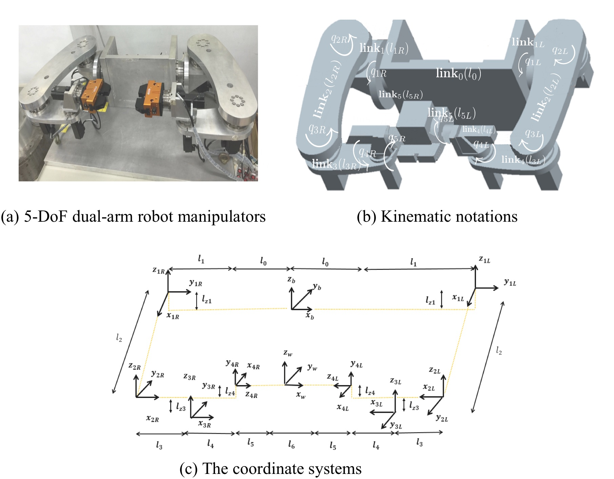

Dynamics with Holonomic Constraints
 |
A crucial problem of Path-contouring/following Control is to minimize the contour error defined as the shortest distance
between the actual displacement \(q(t)\in\mathbb{R}^n\) and the desired path \(\mathcal{P}_w\);
\(\epsilon_c(t)=\mathsf{dist}(q,\mathcal{P}_w(q_d))\equiv \displaystyle \|q-q_d\|_{\infty}, \forall{q_d}\in\mathcal{P}_w\).
To aim at the new coordinate framework of dynamic model, equivalent errors is addressed by utilizing the \(n−1\) equivalent
contour errors determining the desired path in terms of algebraic equation. It becomes the problem of stabilization
of Path-contouring Control. \[ \begin{bmatrix}\epsilon \\e\end{bmatrix}= \begin{bmatrix}\mathcal{P}_w(q) \\\dot{q}_d^T(q-q_d)\end{bmatrix} \] |
Dual-arm Robot Manipulators
|  |
|
Statement of purpose: applying EQ method for systems with Holonomic constraints
Dynamics of system: \(\ddot{\mathbf{q}}=f(\dot{\mathbf{q}},\mathbf{q})+g(\dot{\mathbf{q}},\mathbf{q})u\)
Holonomic constraints: \(\phi(\mathbf{q})=0\)
\(n+m\) generized coordinates: \(\mathbf{q}\in\mathbb{R}^{n+m}\)
\(n\) actuating inputs: \(u\in\mathbb{R}^n\)
\(m\) constraint functions: \(\phi(\mathbf{q}): \mathbb{R}^{n+m}\to\mathbb{R}^{m}\)
Desired path: \(\mathcal{P}_w(\mathbf{q})=0; \mathbb{R}^{n+m}\to\mathbb{R}^{n-1}\)
The new Control objective of contouring Control
Dynamics of errors\[ \begin{bmatrix}\ddot{\epsilon} \\ \ddot{e}\end{bmatrix}= \Omega(\mathbf{q},\dot{\mathbf{q}},t)+\Gamma(\mathbf{q},\dot{\mathbf{q}},t)\tau \]
\[ {\Omega\in\mathbb{R}^{5\times{1}}}= \left[ \begin{array}{ccc} \mathbf{\mathcal{A}}(\mathbf{q})f(\mathbf{q},\dot{\mathbf{q}})+\mathbf{\mathcal{B}}(\mathbf{q},\dot{\mathbf{q}}) \\ \dddot{\mathbf{q}}_{d}^T(\mathbf{q}-\mathbf{q}_{d})+\ddot{\mathbf{q}}_{d}^T(\dot{\mathbf{q}}-\dot{\mathbf{q}}_{d})+\dot{\mathbf{q}}_{d}^Tf(\mathbf{q},\dot{\mathbf{q}}) \end{array} \right] \]
\[ {\Gamma\in\mathbb{R}^{5\times{5}}}=\left[ \begin{array}{ccc} {\mathbf{\mathcal{A}}}(\mathbf{q}) \\ \dot{\mathbf{q}}_d^T \end{array} \right]G(\mathbf{q},\dot{\mathbf{q}}) \]
\(\mathcal{A}(\mathbf{q})=[\nabla\mathcal{P}_w(\mathbf{q}_L)\quad0]\) for left-arm \(\mathcal{A}(\mathbf{q})=[0\quad\nabla\mathcal{P}_w(\mathbf{q}_R)]\) for right-arm To aim \(\epsilon \to 0\), asymptotically, consider \(\mathbf{{\tau}}\) as feedback \(\underline{linearization}\)\[ \mathbf{u}=\mathbf{{\tau}}\in\mathbb{R}^{5\times1}={\Gamma}^{-1}(-{\Omega}+v) \]
with control law \(v\) to \(\underline{stabilize}\) the equivalent errors.